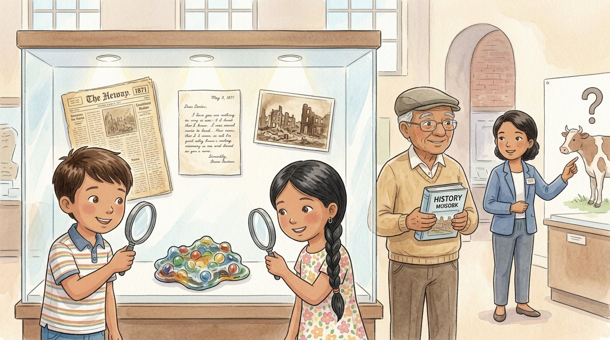

3er grado · Estudios sociales · SS.H.3.3
¿Fue la vaca? Detectives de la historia
Un cuento sobre cómo los historiadores descubren la verdad.
Palabras de estudios sociales que vas a aprender
Toca una palabra verde para ver qué significa.
El cuento
Después de aprender sobre el Gran Incendio, Israel tenía una pregunta: —¿Es verdad que lo empezó una vaca que pateó una lámpara? Su amigo Jamal le había contado esa historia.
El bisabuelo los llevó al museo de historia de Chicago. Allí, una guía les dijo: —Vamos a ser detectives de la historia. Para saber qué pasó, los estudian : documentos y objetos que nos dan información sobre el pasado.
En una vitrina había una carta escrita a mano en 1871 por una niña que vio el incendio, un periódico de esos días y una foto de los edificios quemados. —Estas son —explicó la guía—: las hicieron personas que vivieron los sucesos, en aquella época.
También había un montón de canicas de vidrio derretidas y pegadas por el calor del fuego. —Un objeto hecho y usado por personas del pasado se llama —dijo la guía—. Este artefacto es una de lo caliente que estaba el fuego.
El bisabuelo levantó un libro de historia moderno. —¿Y este libro? —preguntó—. —Ese es una —respondió Lucía—: lo escribió alguien después, estudiando las fuentes primarias.
Entonces la guía les mostró el dibujo de una vaca. —La historia de la vaca de la señora O'Leary es una —explicó—. En 1893, el periodista Michael Ahern confesó que él la había inventado para hacer más interesante su artículo. En 1997, el Concejo de Chicago declaró oficialmente inocentes a la señora O'Leary y a su vaca.
—¡Pobre vaca! —rio Israel—. Durante más de cien años la culparon de algo que no se pudo probar.
Antes de irse, vieron otra cosa sorprendente: después del incendio, personas de Inglaterra enviaron más de 8,000 libros a Chicago. Esos libros ayudaron a crear la Biblioteca Pública de Chicago, ¡la misma donde Lucía tiene su tarjeta!
Esa noche, Israel le escribió a Jamal: «No fue la vaca. Lo comprobé con fuentes primarias». Y le dibujó una vaca con una sonrisa enorme.
Glosario
- fuente histórica
- Un documento u objeto que nos da información sobre el pasado.
- fuente primaria
- Una fuente hecha por una persona que vivió el suceso, en esa época, como una carta, un diario o una foto.
- fuente secundaria
- Una fuente escrita después por alguien que estudió el suceso, como un libro de texto o una enciclopedia.
- artefacto
- Un objeto hecho o usado por personas del pasado, como una herramienta o una canica.
- historiador
- Una persona que estudia el pasado usando fuentes para saber qué pasó.
- leyenda
- Una historia que la gente cuenta mucho, pero que no se puede probar o no es verdad.
- evidencia
- Algo que nos ayuda a saber si una idea es verdadera.
Preguntas
Elige la respuesta correcta. Si te equivocas, el cuento te muestra dónde está la respuesta.
-
Pregunta A. ¿Qué estudian los historiadores para saber qué pasó?
Los historiadores estudian fuentes históricas: documentos y objetos que dan información sobre el pasado.
-
Pregunta B. ¿Qué es una fuente primaria?
Las fuentes primarias las hicieron personas que vivieron los sucesos, en aquella época.
-
Pregunta C. ¿Qué nos dicen las canicas derretidas?
Las canicas derretidas son un artefacto y una evidencia de lo caliente que estaba el fuego.
-
Pregunta D. ¿Por qué el libro de historia moderno es una fuente secundaria?
Lo escribió alguien después, estudiando las fuentes primarias.
-
Pregunta E. ¿Por qué la historia de la vaca es una leyenda?
En 1893, el periodista Michael Ahern confesó que había inventado la historia de la vaca.